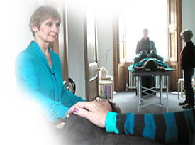

Psychophysical Integration… This combines the Alexander Technique and Chakra Therapy. The Alexander Technique works with unhelpful patterns of physical behaviour and with Chakra Therapy we can complement that process by working with unhelpful psychological patterns that we have developed.
This work can bring about expansion and growth at physical, psychological and spiritual levels. Certified Alexander Teachers who have trained in Chakra Therapy and combine the two disciplines may call their work Psychophysical Integration.
